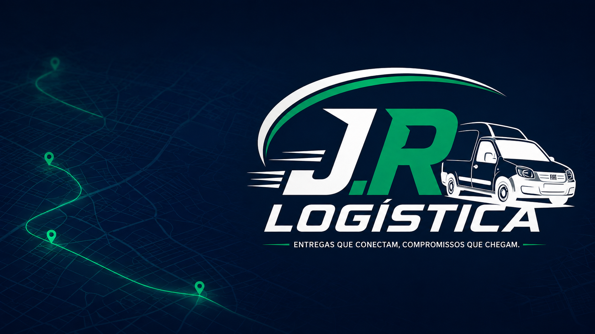

Cadastre-se como autônomo
Crie seu perfil profissional no aplicativo e, se quiser, participe da Rede J.R para receber oportunidades compatíveis com seu perfil.
J.R LOGÍSTICA APRESENTA
Criado a partir da rotina real de entregas, o J.R Driver ajuda entregadores autônomos e motoristas parceiros a organizar rotas, pacotes, pendências e resultados do dia em um só lugar.
O contador registra cada download iniciado pelos botões oficiais desta página.
Uma solução prática para testar na rua e evoluir com o feedback de quem realmente trabalha com entregas.
O J.R Driver reúne as principais informações do trabalho diário em uma interface direta e preparada para uso em campo.
Crie seu perfil profissional no aplicativo e, se quiser, participe da Rede J.R para receber oportunidades compatíveis com seu perfil.
Cadastre pacotes, confira endereços, altere a ordem das paradas e abra cada destino no Google Maps.
Marque entregas, acompanhe o resumo do dia e receba comunicados, avisos urgentes e atualizações do J.R Driver.
O projeto nasceu dentro da operação, acompanhando de perto os desafios de quem passa o dia na rua fazendo coletas e entregas. Informações espalhadas entre mensagens, mapas, anotações e controles separados tornam o trabalho mais lento e aumentam a chance de erros.
Estamos desenvolvendo o J.R Driver para reunir essa rotina em uma ferramenta simples: organizar pacotes e paradas, acompanhar o que foi entregue ou ficou pendente, registrar informações importantes e entender o resultado do dia sem depender de vários aplicativos.
Construir, junto com os entregadores, uma ferramenta prática que realmente ajude no trabalho de campo e possa evoluir conforme as necessidades da operação.
As funções são pensadas a partir de situações vividas em rotas e entregas, não apenas de uma ideia de escritório.
Rotas, pacotes, entregas, pendências e resultado financeiro ficam reunidos em uma rotina mais organizada.
O aplicativo pode ser usado no modo autônomo, sem obrigação de trabalhar para a J.R Logística ou participar da Rede J.R.
A versão Alpha existe para testar em campo, ouvir os profissionais e transformar os retornos recebidos em melhorias reais.

Cada teste de rua, dificuldade relatada e sugestão recebida ajuda a definir as próximas melhorias do aplicativo.
A Rede J.R é uma área opcional do J.R Driver onde o entregador pode criar um perfil profissional mais completo para ser encontrado pela J.R Logística e por futuros parceiros. Você pode usar o aplicativo normalmente sem participar da rede.
Conheça e use o aplicativo primeiro. Quando fizer sentido para você, abra a área Rede J.R e complete seu cadastro profissional.
Apresente sua região de atendimento, veículo, experiência, disponibilidade e formas de contato em um único perfil.
Fique disponível para ser localizado quando surgirem demandas compatíveis com sua cidade, região e perfil de trabalho.
Aproxime-se da J.R Logística e de futuros parceiros que precisem de profissionais para coletas, entregas e rotas.
Participar aumenta sua possibilidade de ser encontrado, mas não representa promessa ou garantia de contratação, serviço ou renda.
Entre no J.R Driver com nome, usuário e senha.
No menu do aplicativo, toque em Rede J.R e escolha participar.
Preencha os dados solicitados e envie o cadastro para análise.
Nosso Discord é o ponto de encontro para entregadores, motoristas parceiros, profissionais autônomos, empresas e pessoas que estão testando o J.R Driver. Por lá você recebe avisos, acompanha novidades e conversa diretamente com a comunidade.
Avisos sobre novas versões, mudanças no aplicativo e novidades da Rede J.R.
Espaços organizados para dúvidas, erros encontrados e sugestões de melhoria.
Canais por perfil e região para aproximar entregadores, motoristas e futuros parceiros.
Como esta versão ainda não está na Play Store, o Android poderá pedir autorização para instalar o aplicativo pelo navegador.
Toque no botão de download e aguarde o arquivo APK ser salvo no celular.
Quando o Android solicitar, permita a instalação de aplicativos provenientes do navegador.
Escolha o modo Entregador Autônomo, faça o cadastro e comece o teste.
Cada versão nasce dos testes em campo e dos retornos de quem usa o aplicativo. Aqui você confere, de forma simples, o que mudou em cada atualização.
Versão Alpha pública disponível para Android.
Foi adicionado o acompanhamento de uso do J.R Driver no Enterprise. Os indicadores gerais contabilizam todos os usuários do aplicativo, participando ou não da Rede J.R. Online, offline e último acesso ficam disponíveis somente para profissionais da Rede J.R. O registro usa apenas dados técnicos de atividade, sem localização, rotas ou informações de entrega.
A Rede J.R ganhou espaço próprio no menu. Também foram feitos ajustes na tela inicial, no fluxo de participação e nas validações dos documentos cadastrados.
Exclusiva do modo Motorista J.R, esta atualização adicionou a comprovação de entrega pelo WhatsApp, com fotos e mensagem organizada. Entregas sem exigência de comprovação continuam podendo ser finalizadas normalmente.
Versão preparada para os testes públicos, reunindo cadastro autônomo, organização de pacotes e rotas, notificações, resumo do dia e controle financeiro.
Este histórico será atualizado sempre que uma nova versão do J.R Driver for publicada.
Use o aplicativo em uma rota real ou simulada e conte o que funcionou, o que dificultou e o que precisa melhorar.
Envie uma mensagem explicando o que aconteceu. Uma captura de tela e os passos realizados antes do erro ajudam bastante.
Enviar feedback pelo WhatsApp WhatsApp: (51) 99464-7219 E-mail: jrlogistica.drive@gmail.comSim. A versão Alpha é disponibilizada gratuitamente para testes.
Esta versão de teste está disponível somente para aparelhos Android.
Não. O modo Entregador Autônomo permite usar o aplicativo de forma independente. A participação na Rede J.R é opcional e pode ser ativada depois, quando você quiser criar seu perfil profissional.
Não. A participação é opcional. Quem escolher participar poderá testar recursos ligados ao perfil profissional e ao recebimento de oportunidades.
Não. A Rede J.R aumenta a visibilidade do perfil e pode aproximar o profissional de oportunidades compatíveis, mas não garante contratação, serviços ou renda.
Sim. Aplicativos instalados fora da Play Store exigem autorização do usuário. Baixe o APK somente pelo link oficial desta página.
Baixe o aplicativo, faça seu cadastro e ajude a construir uma ferramenta feita para entregadores.